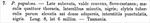

Click on images to enlarge
{kind=link}

Paropsis papulosa (Stål, 1860), description
Name
Trachymela papulenta (Chapuis, 1877)
Type specimen
Not examined.
Original description
[Original description shown in figure, translated from Latin using ChatGPT, 03/2026]
[Paropsis papulosa Stål, 1860] Broadly somewhat ovate, very convex, yellowish-chestnut; with four spots on the thorax, small at the sides, black; elytra rather densely sprinkled with slightly raised tubercles; interstices punctulate, black. Length 8, width 6 mm. — Tasmania.
Notes
This species was originally described as Paropsis papulosa (Stål, 1860) from Tasmania, but Chapuis (1877) noted that the name was pre-occupied by an earlier species of Erichson (1842) and proposed the name papulenta. Blackburn (1986, p.640) suggests that this species is the same as P. rugosa (Chapuis), but indicates that Stål's description is insufficient for more than a "guess". Weise (1916) concurs with his decision.
Blackburn is almost certainly correct in his synonymy. T. rugosa is quite variable in colouring, but Tasmanian specimens are often darker than typical mainland specimens, often with black spots on the pronotum and frequently with black interstices. There is really no other Tasmanian species of Trachymela of that size that would fit Stal's description as well.
References
Blackburn, T. 1896, "Revision of the genus Paropsis. Part I", Proceedings of the Linnean Society of New South Wales, vol. 21, no. 4, 637-693 (page 640).
Chapuis, F. 1877, "Synopsis des espèces du genre Paropsis", Annales de la Société Entomologique de Belgique (Comptes-rendus), vol. 20, 67-101 (page 91).
Stål, C. 1860, "Till kannedomen om Chrysomelidae", Öfversigt af Kongelige Vetenskaps-Akademiens Förhandlingar, Stockholm, vol. 17, 455-470 (page 465).
Weise, J. 1916, "Chrysomelidae: 12. Chrysomelinae", 1-255 (page 169).
Copyright © 2026. All rights reserved.